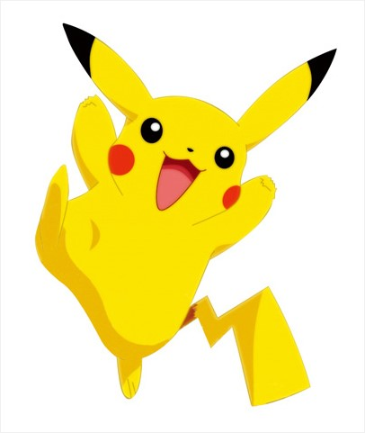

1996년 닌텐도의 미니 게임기 게임보이의 소프트웨어로 출시된 [포켓몬]의 주인공 캐릭터. 멸종 희귀 동물인 새앙 토끼(pika)와 햄스터를 실제 모델로 하고 있으며 이후 등장한 같은 제목의 만화, 애니메이션, 각종 캐릭터 상품에서 주인공으로 등장하고 있다.
귀여운 외모와 사랑스러운 동작 등으로 [포켓몬]의 인기를 이끌었으며, 2000년대 초반, 미국의 캐릭터 인지도 조사에서 미키마우스를 큰 점수차로 눌러 일본 캐릭터의 신화로 여겨지기도 했다.

우리나라에 지우라는 이름으로 알려진 주인공 사토시의 파트너 포켓몬으로 전기를 특기로 사용하며 노란색의 몸에 갈색의 줄무늬, 귀 끝과 꼬리 끝이 검정색이다. 볼에는 전기 주머니라는 빨간색 동그라미가 달려 있어 10만 볼트, 번개 등 전기를 이용한 공격이 가능하다. 피카츄가 진화를 하면 라이츄가 되지만 주인공 사토시의 피카츄는 진화를 거부한 채 피카츄로만 살아가고 있다.
포켓몬 도감에 기록된 표준 신장은 40cm, 몸무게는 6kg. 많은 이들이 피카츄라는 이름을 특정 캐릭터의 이름으로 알고 있으나 쥐, 개, 고양이처럼 한 가공 생물의 이름일 뿐이다. 여러 마리가 모이면 번개가 치기도 한다.